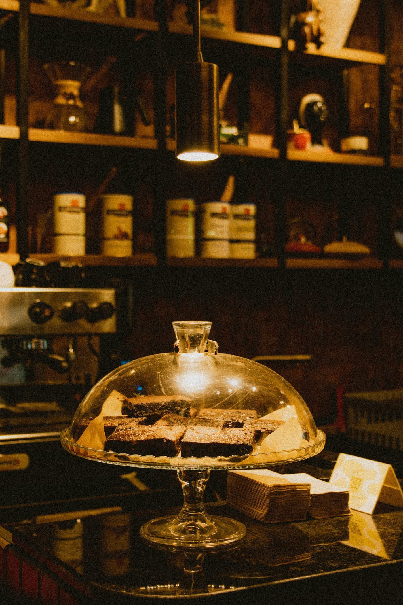
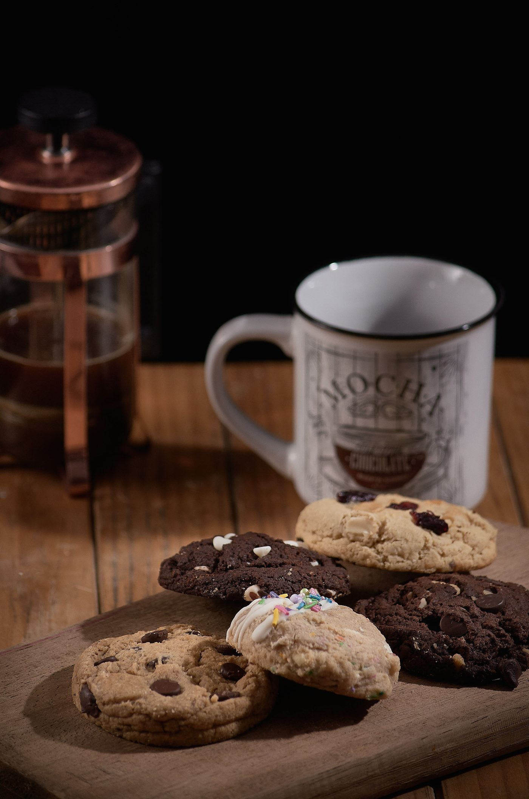
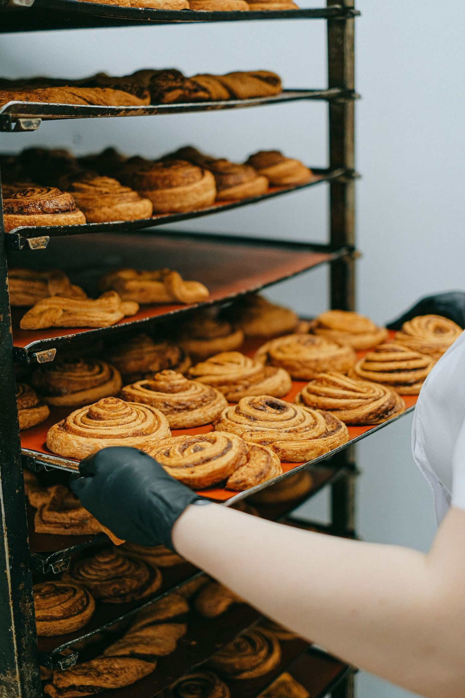

From the bakery case at Heavenly Hands Bakery
A dedicated gluten-free bakery in Metairie, baked celiac-safe from start to finish.
Gallery



All gallery photos are stock photos, labeled as such. They show bakery treats, not this bakery's goods.
Contact
Heavenly Hands Bakery serves Metairie, LA. Questions? Call (504) 559-4441.